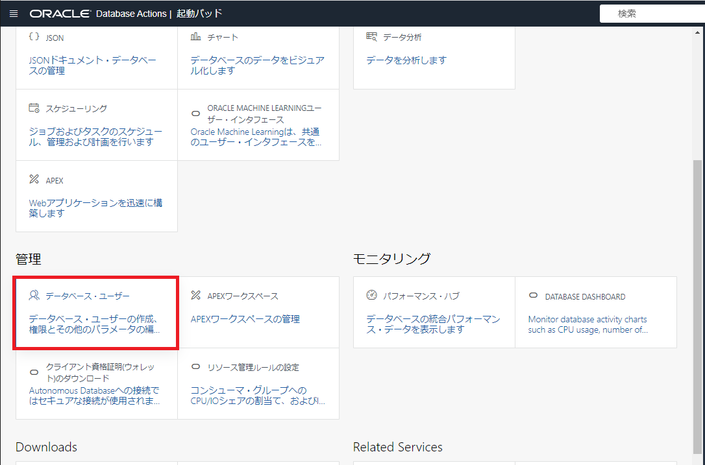
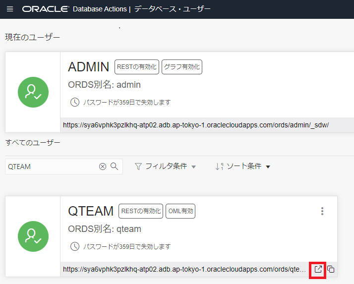
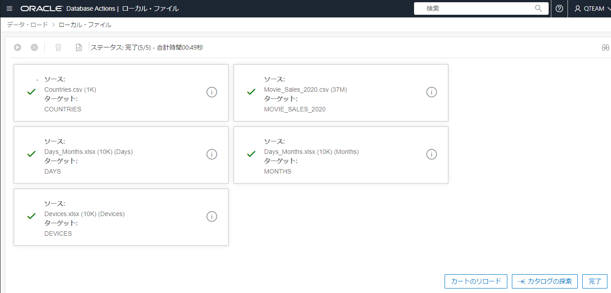
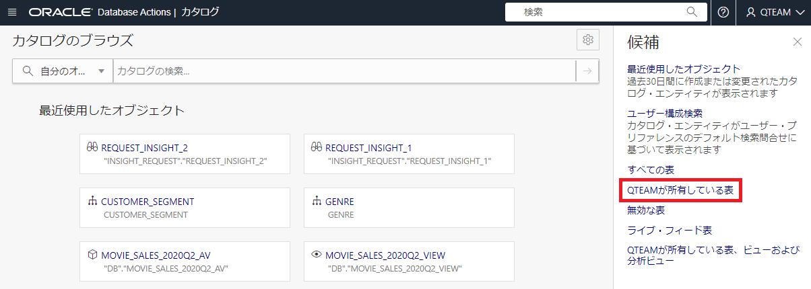
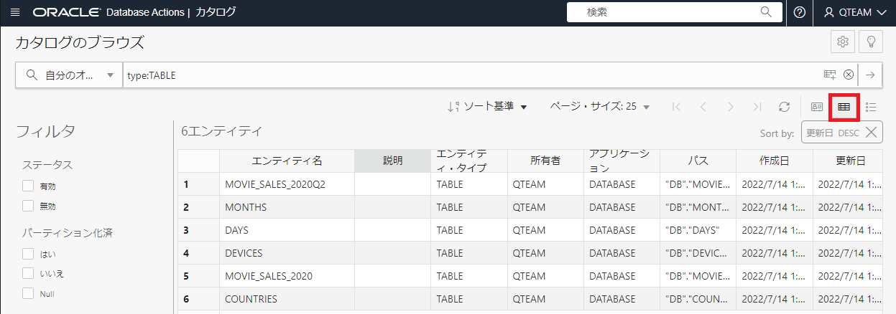
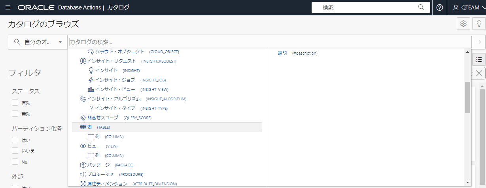
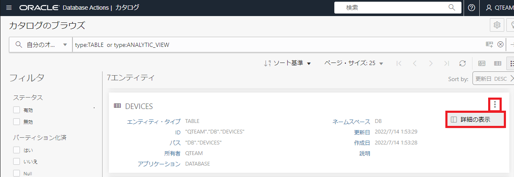
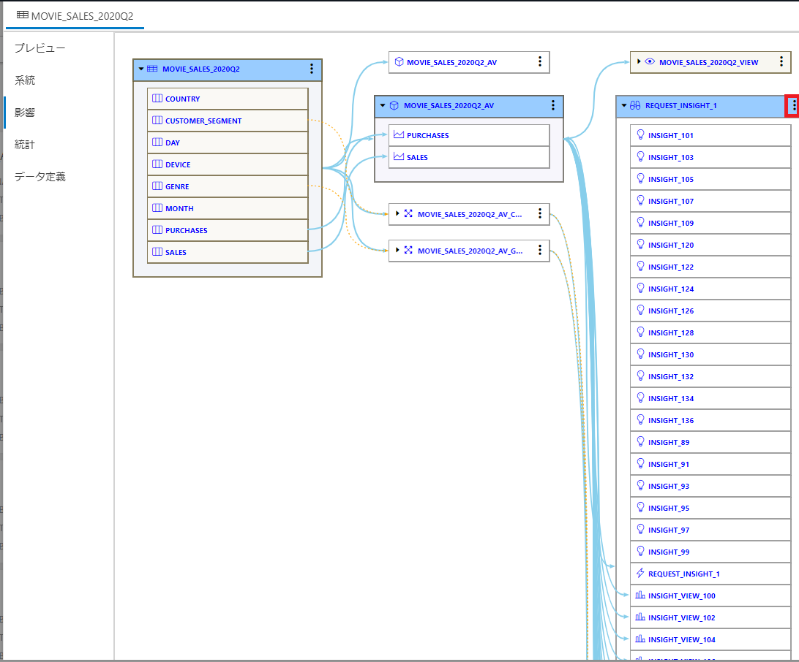

はじめに
この章はまずAutonomous Database(ADB) のツールである Database Actions の機能の中から、データ分析、データ・インサイト、カタログの機能を確認します。
Database Actions を使う前に、セキュリティを高めるため、実務と同じように、データベース管理者とは別の新しいユーザー（スキーマ）を作り、そのユーザーから Database Actions を使います。
前提条件
- ADBインスタンスが構成済みであること
※ADBインタンスの作成方法については、101:ADBインスタンスを作成してみよう を参照ください。 - 以下にリンクされている売上実績サンプルデータのファイルをダウンロードしていること
目次
所要時間 : 約50分
1. 分析用のデータベース・ユーザーを作成しよう(Database Actions)
ADBインスタンスを作成すると、デフォルトでADMINユーザが作成されていますが、Database Actions を操作するデータベース・ユーザーを作成します。
ここではADBにおけるデータベース・ユーザーの作成してみます。
-
Database Actionsの起動パッドで データベース・ユーザー をクリックします。

-
データベース・ユーザーの管理画面で、ユーザーの作成をクリックします。

-
ユーザーの作成にて、次のようにユーザー情報を入力し、ユーザーの作成 をクリックします。
ユーザー名 QTEAM パスワード Welcome12345# パスワードの確認 Welcome12345# Webアクセス ON Webアクセス拡張機能 承認が必要 ON REST別名 qteam（デフォルト） 表領域の割当制限 DATA UNLIMITED 付与されたロール DWROLE 付与済 ON デフォルトON その他はデフォルト


-
QTEAM ユーザーが作成されたことを確認したら、QTEAM ユーザーカードの右下にある 新しいタブで開く アイコンをクリックして、QTEAM ユーザーでログインしし直します。

2. ワークショップで使うデータを準備しよう
サンプルデータとして、架空の動画配信サービスの売上実績を使います。
-
このワークショップで使うために、上記にある事前準備で用意した４つのファイルを、データを新しい データベース・ユーザー(QTEAM) でロードします。
※ファイルをロードする詳しい手順は、102: ADBにデータをロードしよう をご参照ください。
注意
ロードするファイルは４つですが、Days_Months.xlsxファイルは、DaysとMonthsのシートがあり、どちらもロードするので、合計５テーブル作成します。
-
SQLを使用してデータセットに必要な修正します。SQL をクリック。

【データの修正について】
- データ件数が多いので、第2四半期のみのデータにします。
- DAY列の値に大文字と大文字が混在しているので、文字列を整理します。
-
以下のSQLをワークシートに貼り付けて、スクリプトの実行 アイコンをクリックします。
create table MOVIE_SALES_2020Q2 as select COUNTRY , initcap(DAY) as DAY -- Use title case for days , MONTH , GENRE , CUSTOMER_SEGMENT , DEVICE , SALES , PURCHASES FROM MOVIE_SALES_2020 where month in ('April','May','June'); -- only want data from Q2 exec dbms_stats.gather_table_stats(user, 'MOVIE_SALES_2020Q2');;結果が表示されます。

-
左上の Database Actions をクリックして、起動パッドに戻ります。

3. Database Actionsで操作してみよう
それでは、架空の動画配信サービスの売上実績データを使って、データ分析、データ・インサイト、カタログを操作してみよう！
3-1.データ分析してみよう
データ分析ツールによって、ディメンション、階層、メジャーを指定することで、データに高度なモデルを簡単に構築できます。さらに、ピボットテーブルやグラフなどの視覚的なツールを使用してデータを簡単に分析するためのツールを提供します。
-
Database Actionsの起動パッドで データ分析 をクリックします。

-
分析ビューの作成画面で、作成 をクリックします。

-
分析ビューの作成画面で、ファクト表で、MOVIE_SALES_2020Q2 を選択し、階層およびメジャーの作成 をクリックします。すると、階層およびメジャーの生成が始まります。

-
階層およびメジャーの生成の４ステップが完了したら、閉じる をクリックします。

-
分析ビューの作成画面で、画面左側のパネルから データソース を選択します。すると、先程、SQLで作成したテーブルMOVIE_SALES_2020Q2のスタースキーマが表示されました。MOVIE_SALES_2020Q2の周りにある４つの表（DAYS,MONTHS,COUNTRIES,DEVICS）の右上にある ︙ をクリックして、展開します。これで、MOVIE_SALES_2020Q2表の元データを知ることができました。この機能は既存テーブルの元データを知る手掛かりになります。

-
画面左側の階層リストで、COUNTRIES 階層をクリックします。階層名を別名に変えることができます。階層名を GEOGRAPHY と入力し変更します。

-
画面左側の階層リストで、DAYS 階層をクリックします。階層名を DAY と入力し変更します。また、DAY階層を開き、DAYのソート基準を DAY_NUM_USA に変更し、曜日順にします。


-
画面左側の階層リストで、MONTHS 階層をクリックします。階層名を MONTH と入力し変更します。また、MONTH階層を開き、MONTHのソート基準を MONTH_NUM に変更し、月順にします。


-
画面左側の階層リストで、メジャー 階層を開き、SALES をクリックします。SALESの式は、SUM と合計の集計となっていることを確認します。平均やカウントなどの集計方法も可能です。分析ビューの作成の設定が完了したら、画面右下の 作成 をクリックします。

-
分析ビューの生成ダイアログで、はい をクリックします。

-
分析ビューが作成されると、次のような画面になります。エラーが表示されていないこと確認します。

-
分析タブ をクリックしたら、データの要約が表示されます。この画面でデータの概要を知ることができます。

Note
画面の右側にある関連するインサイトが表示されていない場合、しばらく待つと表示されます。
-
棒グラフアイコンをクリックしたら、チャートを棒グラフにすることができます。

-
右側のSALESメジャーに関連する洞察も表示できます。 右側の Drama の棒グラフをダブルクリックすると、グラフを大きくして表示します。

-
分析ビューの データ分析 をクリックして、分析ツールに戻ります。

-
ピボットテーブルビューをクリックします。

-
階層のレベルを次のように、ドラッグ＆ドロップで変更します。
- CUSTOMER_SEGMENT を列に移動します。
- 左側の[DEVICES]階層を展開し、FORM_FACTOR を行に移動します。
- 値の SALES の文字のすぐ右にある✗をクリックし、SALESを削除します。
- 左側の[Measures]階層を展開し、 PURCHASES を値に移動します。
- PURCHASESのフォーマットのダイアログボックスが表示されるのでデフォルト設定のまま保存をクリックします。

-
変更した階層に従ったデータが表示されました。このようにして、簡単に行列項目を変更できます。

-
検索できるフィルタを追加します。
- 左側の[MONTHS]階層を展開し、MONTH をフィルタに移動します。
- MONTHのダイアログボックスで、April をクリックし、右の選択項目に追加します。
- フィルタポップアップメニューの「X」アイコンをクリックします。

-
４月のみのデータが表示されました。このように、検索条件も簡単に設定できます。

-
これで、MOVIE_SALES_2020Q2の分析ビューができました。これは、階層、メジャー（集計式を含む）を特徴とし、データを分析するプレビュー機能を提供します。それでは、画面左上の Database Actions をクリックして、Database Actions 起動パッドに戻ります。

3-2. データ・インサイトを生成しよう
データ・インサイトを使うと、ビジネスモデルのデータを精査し、データセット内の隠れたパターン、異常、および外れ値を探すことができます。データ探索には、回帰分析の他、OracleDatabaseに組み込まれている多くの分析機能を採用しています。
-
Database Actionsの起動パッドで データ分析 をクリックします。

-
インサイトの検索画面で、次のとおり設定し、インサイトを検索します。
- スキーマを QTEAM に選択します。
- 分析ビュー/表を MOVIE_SALES_2020Q2 に選択します。
- 列を PURCHASES に選択します。
- 検索ボタンをクリックします。

-
インサイトの検索が始まります。データ・インサイトはデータを精査し、データセット内の隠れたパターン、異常、および外れ値を探します。これらは、OracleDatabaseに組み込まれている多くの分析機能を使います。よく使われる機能は、回帰分析です。非常に多くのクエリを実行しているため、このプロセスが終わるまで、数分かかることがあります。実行状態は、画面の左上にあるプログレスバーで確認できます。処理中は、さまざまなインサイトが画面に表示されるため、画面が自動的に更新されます。

Note
自動更新の無効化 をクリックすると、自動更新を止めることができます。自動更新の有効/無効は、切り替えることができます。画面の右側にある関連するインサイトが表示されていない場合、しばらく待つと表示されます。
-
検索が完了したら、データセットで異常であると判断されたデータパターン上位20の洞察のそれぞれの棒グラフ（ゲージ）を含むダッシュボードが表示されます。

Note
データ・インサイトの検索は、CPUを集中的に使用するので、プロセスを完了する時間は、Autonomous Database のOCPU数に一部依存します。OCPU数が少ないと、検索に10分以上かかる場合があります。Autonomous Database にて、より多くのOCPU数で、できれば、自動スケールを有効にして検索を実行すると、データ・インサイトの検索を完了するまでの時間を大幅に短縮できます。
-
画面下にスクロールし、「June」（6月）の棒グラフなど、これらのいずれかをクリックします。すると、次のように、このインサイトの詳細ビューにドリルダウンします。

このグラフは、6月のさまざまな映画ジャンルの実際の購入（青いバー）と予想される購入（緑の線）を示しています。3つのセグメントには太字の黒い境界線があります。これらは最も予想と異なる値を示しており、次のことを示唆しています。
- コメディとロマンスは、予想よりも高く購入されている。
- 空想科学(Sci-Fi)の購入額は、予想より低い。
-
強調表示されたバーの実際の値と期待値が表示されます（このスクリーンショットのロマンス）。これの仮説としては、「四半期の他の月（4月と5月）と比較して、6月のSF映画の消費量は予想よりも少なく、コメディーとロマンスの消費量は予想よりも多かった」です。
これは、データからは一見、わかりにくいものですが、確かに非常に実用的な洞察です。 -
画面の左上にある 戻る ボタンをクリックして、 データ・インサイト ダッシュボードに戻ります。

-
時間の節約のために、すでに実行されたインサイトを取得もできます。
- データ・インサイト ダッシュボード画面の右上の三本線をクリックすると、最近の検索のリストが表示されます。
- 表示されるリストから適切な検索を選択します。（この例では1つだけです。）この検索のデータを取得できます。


-
データ・インサイトまとめ
これまでは、データアナリストは手動でデータセットを調べ、データ内の隠れたパターンや外れ値を探していました。しかしAutonomous Databaseでは、同じ操作を自動で実行するデータ・インサイトを利用できます。これによって、データの理解が進むようになります。それでは、画面左上の Database Actions をクリックして、Database Actions 起動パッドに戻ります。
3-3. カタログを使ってみよう
このツールは、テーブル、ビュー、ビジネスモデルなど、システム内のすべてのエンティティの系統分析（データ元の調査）と影響分析（データの関連先）の両方を明示します。
-
Database Actionsの起動パッドで カタログ をクリックします。

-
エンティティを確認します。カタログ画面の右の候補から、QTEAMが所有している表 をクリックします。

-
このようなページが表示され、画面左上に 自分のオブジェクト かつ type:TABLE となっており、QTEAMが所有している表を確認できます。

-
右上に３つ、横に並ぶアイコンのうち、現在は左の カードビュー が選択されていますが、真ん中の グリッドビュー をクリックすると、グリッドビューを表示します。

-
右上にアイコンのうち、右の リストビュー をクリックすると、リストビューを表示します。

-
さまざまな場面によって、どの表示がよいか分かれますが、今回は、右上のアイコンのうち、左の カードビュー をクリックし、カードビューを表示します。

-
カタログには検索機能があります。上部にある検索バーをクリックし、type:TABLE の文字列に続いて、区切り文字の半角スペースと、映画の売上を検索できるように movie sales と入力して、検索の実行 をクリックして、検索すると、検索条件に一致するエンティティが表示されます。

-
次のように検索フィルターを変更し検索します。すると、データ分析するとき作成した分析ビューも表示されます。
- ガイド機能を使うために、一旦、movie sales の文字を削除します。
- type:TABLE に続いて、区切り文字の半角スペースに続き、or と入力します。
- 検索フィルターの下のガイドから、「Entity Type」の下の「…」をクリックして、ANALYTIC_VIEW を選択します。
- 再度、文字列の最後に、区切り文字の半角スペースと movie sales と入力します。
- 検索の実行 をクリックして、検索します。


注意
ブラウザによっては、ガイド機能の単語が日本語に翻訳されて、入力される場合があります。そのときは、英語に入力し直します。例）タイプ → type
-
検索フィルターで、movie sales の文字を削除し検索します。すると、次のように、７つのエンティティが表示されます。

-
データのデータ元または系統を確認します。DEVICESテーブルのカードの右上にある ︙ をクリックし、詳細の表示 をクリックします。

-
DEVICESテーブルの情報の左のメニューで、系統 をクリックします。

-
画面右側にある各カードの右側にある ︙ をクリックし、展開 をクリックします。DEVICESのデータソース情報を知ることができます。画面の特定の領域にマウスポインタを合わせると、さらに多くの情報が表示されます。必要に応じてさまざまなカードを展開することで、さまざまなレベルの情報にアクセスできます。

-
画面の右下にある 閉じる ボタンをクリックして（またはキーボードの[ Esc ]ボタンをクリックして）、メインのカタログビューに戻ります。

-
MOVIE_SALES_2020Q2 テーブルの影響分析を確認します。影響分析とは、特定のエンティティに依存している他のエンティティを示します。系統の逆と考えることができます。MOVIE_SALES_2020Q2 テーブルのカードの右上にある ︙ をクリックし、詳細の表示 をクリックします。

-
MOVIE_SALES_2020Q2 テーブルの情報の左のメニューから、影響 をクリックします。

-
画面右側にある各カードの右側にある ︙ をクリックし、展開 をクリックします。このテーブルは、いくつかの属性ディメンションを含む分析ビューとして実装されました。これに対して、データ・インサイトを実行した結果、多数のクエリを実行したことがわかります。

-
REQUEST_INSIGHT_1 （画面の右側）を展開すると、データ・インサイトの一部として実行された、さらに多くのクエリの一部が表示されます。このテーブルがどれだけのクエリに使われたか（影響しているか）を確認することができました。

-
データ・カタログでは、次の機能を確認しました。
- カードビュー、グリッドビュー、リストビューでエンティティを表示する方法
- エンティティの検索機能の使い方
- エンティティの系統分析
- エンティティの影響分析
以上で、この章は終了です。
次の章にお進みください。